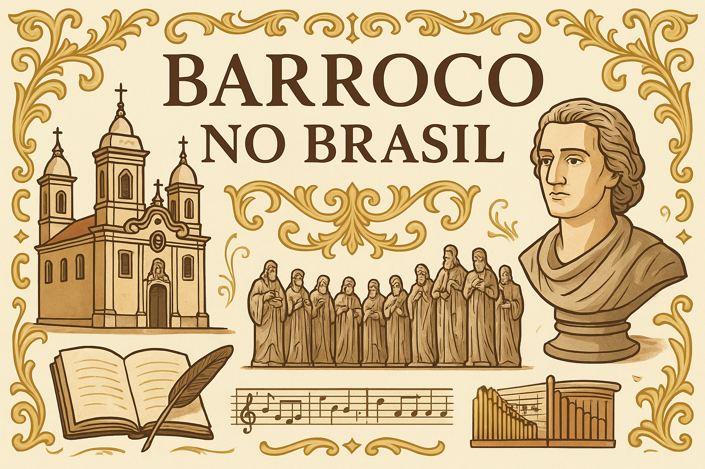

Barroco no Brasil
O Barroco no Brasil foi um dos movimentos culturais e artísticos mais marcantes da história colonial, desenvolvido entre o final do século XVI e meados do século XVIII. Ele refletiu tanto a influência europeia, especialmente de Portugal e da Igreja Católica, quanto a adaptação ao contexto social, religioso e econômico da colônia.
Surgindo como manifestação estética ligada à Contrarreforma, o Barroco expressava a grandiosidade da fé católica, o contraste entre razão e emoção e a busca pelo esplendor artístico. No Brasil, essa estética encontrou terreno fértil, resultando em obras literárias, arquitetônicas, escultóricas e musicais de grande relevância.
Contexto Histórico
O movimento barroco no Brasil ocorreu em um período de intensa religiosidade, marcado pelo domínio da Igreja Católica e pela influência dos jesuítas na educação e cultura. Foi também um tempo de crescimento econômico da colônia, especialmente com o ciclo do açúcar no Nordeste e, posteriormente, com o ciclo do ouro em Minas Gerais.
Características do Barroco Brasileiro
- Contrastes e dualidades: vida terrena x vida espiritual, pecado x perdão, luz x sombra.
- Religiosidade intensa: obras de cunho catequético, ligadas ao catolicismo.
- Riqueza ornamental: igrejas e palácios adornados com talhas douradas e esculturas detalhadas.
- Linguagem rebuscada na literatura: uso de antíteses, paradoxos, metáforas e hipérboles.
- Integração entre artes: arquitetura, escultura, pintura e literatura dialogavam entre si.
Literatura Barroca no Brasil
A literatura barroca floresceu principalmente no século XVII, tendo como maior expoente Gregório de Matos Guerra (1636–1696), conhecido como o "Boca do Inferno". Sua obra é marcada por uma linguagem satírica e crítica à sociedade colonial, ao mesmo tempo em que revela profunda religiosidade.
Outros nomes importantes
- Padre Antônio Vieira (1608–1697): célebre por seus sermões, que mesclam eloquência barroca com crítica social e política.
- Bento Teixeira (1561–1600): autor do poema Prosopopeia (1601), considerado o marco inicial do Barroco literário no Brasil.
Temas recorrentes na literatura barroca
- Vaidade e fugacidade da vida (concepção de vanitas).
- O poder e a efemeridade das riquezas.
- O amor como conflito entre corpo e alma.
- A glória divina acima das conquistas humanas.
Arquitetura e Artes Visuais
O Barroco brasileiro se destacou especialmente na arquitetura religiosa, com igrejas imponentes, ornamentos rebuscados e fachadas trabalhadas. O estilo se expandiu do Nordeste para Minas Gerais durante o ciclo do ouro.
Principais exemplos
- Igreja de São Francisco (Salvador – BA): famosa pela riqueza das talhas douradas.
- Igreja de Nossa Senhora do Carmo (Ouro Preto – MG): exemplar da fusão entre tradição europeia e criatividade local.
- Igreja de São Francisco de Assis (Ouro Preto – MG): projetada e decorada por Antônio Francisco Lisboa, o Aleijadinho.
Escultura e Pintura
- Aleijadinho (1738–1814): escultor e arquiteto mineiro, autor de obras-primas como os Doze Profetas em Congonhas do Campo (MG).
- Manoel da Costa Ataíde (1762–1830): pintor responsável por importantes tetos pintados, como na Igreja de São Francisco de Assis em Ouro Preto.
Música Barroca no Brasil
A música barroca brasileira esteve fortemente ligada à Igreja e às celebrações religiosas. As composições tinham caráter sacro e eram executadas em missas e procissões.
- Pe. José Maurício Nunes Garcia (1767–1830): principal nome da música barroca no Brasil, responsável por uma vasta produção de obras sacras.
Legado do Barroco no Brasil
O Barroco deixou marcas profundas na cultura brasileira:
- Consolidou a identidade artística colonial.
- Representou a fusão de influências europeias e elementos locais.
- Legou obras arquitetônicas, escultóricas e literárias que permanecem como patrimônio histórico e artístico.
Atualmente, cidades como Ouro Preto, Congonhas e Salvador são consideradas verdadeiros museus a céu aberto do Barroco, atraindo turistas e estudiosos do mundo todo.
Referências
BOSI, Alfredo. História Concisa da Literatura Brasileira. São Paulo: Cultrix, 2006.
CANDIDO, Antonio. Formação da Literatura Brasileira. Belo Horizonte: Itatiaia, 1997.
HAUSER, Arnold. História Social da Arte e da Literatura. São Paulo: Martins Fontes, 1998.
PEREIRA, Lúcia Miguel. História da Literatura Brasileira: Prosa de Ficção (de 1500 a 1870). Rio de Janeiro: José Olympio, 1973.
REIS, José Carlos. O Barroco Mineiro: Arte, Sociedade e Cultura. Belo Horizonte: UFMG, 2000.